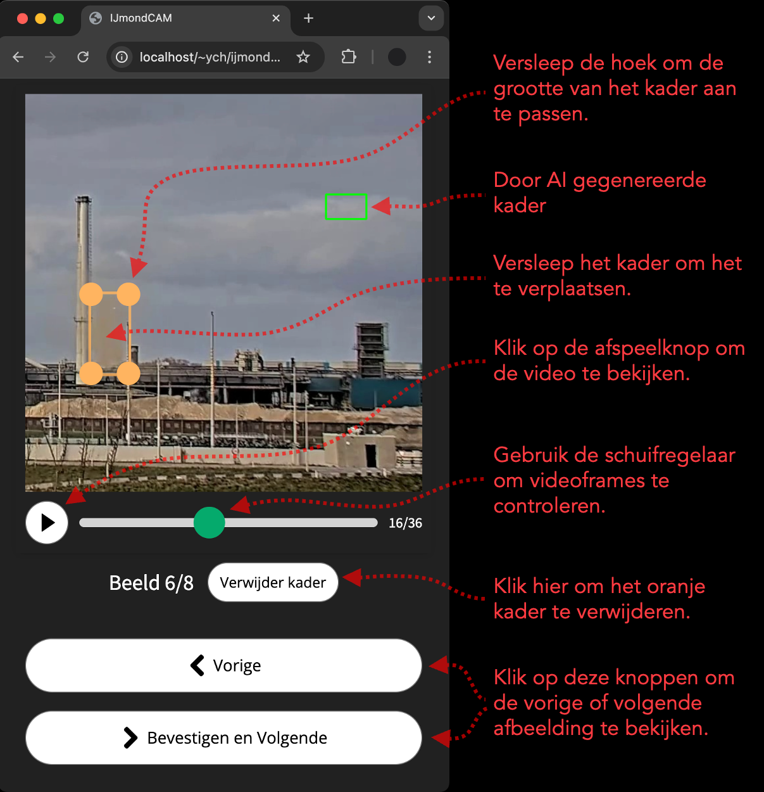

Deze pagina introduceert de taak om te controleren of het AI-model rook correct detecteert. Elk beeld heeft een groen kader die het AI-model creëert. De kader toont de locatie waarvan de AI denkt dat er rookuitstoot is.
- ✅ Past het kader goed? Als het kader er goed uitziet, hoeft u niets te doen.
- üîß Past het niet? Als het kader niet goed past bij de rookuitstoot, klik en versleep dan de hoeken van het kader in oranje kleur om het aan te passen.
- ❌ Geen rook in het kader? Als er geen rookemissies zijn in het kader, klik dan op de knop "Verwijder kader" om het kader te verwijderen.
- üîç Twijfel? Klik op het afspeelpictogram om de video te bekijken (bijvoorbeeld om te controleren of er rook in de doos zit).
Let op: geef alleen feedback op de afbeelding met het groene kader, niet op de hele video.
Gebruikersinterface
De onderstaande afbeelding legt de gebruikersinterface uit.
Kader Past Niet op de Rook (Pas het Kader aan)
Als het kader niet goed past bij de rookuitstoot, klik en versleep dan de hoeken van het kader in oranje kleur om het aan te passen. Let op dat het kader niet te groot of te klein mag zijn.
Geen Rook in het Kader (Kader Verwijderen of Aanpassen)
Als er geen rookemissies zijn in het kader, klik dan op de knop "Verwijder kader" om het kader te verwijderen. Soms bevat het kader geen rook, maar verschijnt er rook op andere plekken in de afbeelding. Verwijder in deze situatie het kader (voorkeursoptie). U kunt de kader ook aanpassen aan de rook.
Alleen Stoom in het Kader (Verwijder de Kader)
Als er alleen stoom in het kader zit, moet deze verwijderd worden. Als u niet zeker weet of het stoom of rook is, klikt u op het afspeelpictogram om de video te bekijken. Stoom verdwijnt sneller en heeft scherpe randen in vergelijking met rook. Stoom heeft meestal een hoge opaciteit, waardoor de achtergrond niet zichtbaar is. Bekijk deze pagina voor voorbeeldvideo's van stoom.
Rook en Stoom in het Kader (Plaats het Karder op de Rook)
Rook en stoom kunnen tegelijkertijd verschijnen. Als het kader zowel stoom als rook bevat, pas het kader dan aan zodat het op de rook past (en niet op de stoom).

Slecht Weer (Verwijder het Kader)
Verschillende slechte weersomstandigheden kunnen het zicht van de camera beïnvloeden. Verwijder in deze situatie altijd het kader en pas het niet aan. De reden hiervoor is dat we bij slecht weer niet precies kunnen weten of het om rook of stoom gaat.